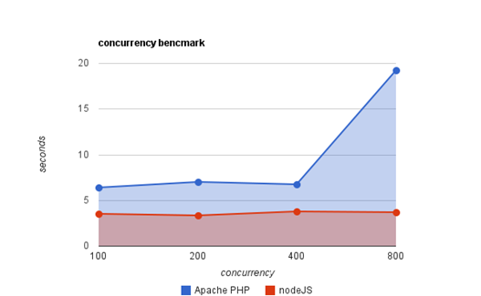
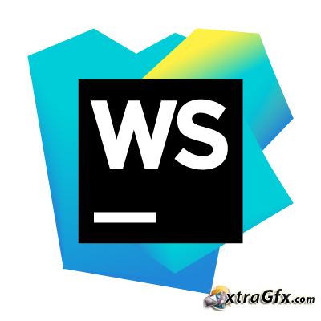

by Rémi Collignon for @ClubElecIsen <3
KESAKO?
Etudiant en M1
Un serveur web non bloquant
Basé sur des Events
Codé en Javascript
Cross-platform
Exemple de projet
même en tant qu'appli de bureau

Interêts
- Coder en Javascript coté serveur.
- Avoir un serveur web entièrement configurable avec 1 langage
- Un serveur web performant
Inconvénients
- Gestion des dépendances bordélique
- Scalabilité = 0
Ok, mais avec quel editeur?

Rappels
Les callbacks
Utilisation pour des appels asynchrones
Ce n'est qu'une fonction
$http({
method: 'GET',
url: "https://test.fr",
}).then( function(res) {
console.log( res );
});
Les objets
var myObjet = {
"fn": function() {},
"name": "Cours de node",
"useless": false
}
Les modules
const fs = require('fs');
fs.show();
module.exports = {
"show": function() {
console.log( 'You should try Node' );
}
}
Comment on l'installe
En ligne de commande !!!
Par ici pour les utilisateurs Windows & Mac
Pour les linuxiens :
# Ubuntu & Débian
$ apt-get install nodejs
# Gentoo
$ yum install nodejs
# Arch
$ yaourt nodejs npm
N'oubliez pas d'ajouter le chemin de Node dans votre variable d'environnement PATH
Petite vérification pour voir si tout fonctionne :
$ node -v
v5.8.0
Notre premier projet!
$ mkdir MyProject && cd MyProject
$ npm init
name: my-project
version: 0.0.1
description: My NodeJS HelloWorld
entry point: main.js
test command:
git repository:
keywords:
author: miton
license: MIT
Is it ok? yes
$ ls
package.json
Le package.json
Le saint fichier
{
"name": "my-project",
"version": "0.0.1",
"description": "My NodeJS HelloWorld",
"main": "main.js",
"scripts": {
"test": "echo \"Error: no test specified\" && exit 1"
},
"author": "miton",
"license": "MIT"
}
Gestion de dépendances
Ajout d'une dépendance
$ npm install --save express
"dependencies": {
"express": "^4.13.4"
}
$ npm install --save-dev lite-server
"devDependencies": {
"lite-server": "^2.1.0"
}
D'où sortent ces packets
Site officiel de NPM
- Builder vos app (Grunt, gulp, jade, sass)
- Vous faciliter la vie (Express, Americano, Bower, Forever)
- Sortir du code optimisé (min-css, uglifyjs, concat)
+200 000 packets pour:
Et concrètement un serveur web?
C'est ça !
main.js :
var http = require('http');
http
.createServer( function(request, response) {
response.write("HelloWorld
");
response.end();
})
.listen( 8080 );
$ node main.js
Requête → réponse
- Cas 1 : je sers mon site statique (html, css, js)
var express = require('express');
var path = require('path');
var app = express();
var staticFolder = path.join(__dirname, '/public');
var staticRessource = express.static(staticFolder);
app.get('/*', staticRessource);
app.listen(8080);
- Cas 2 : Je sers une API
app.get('/messages', function(req, res){
res.json({
err: null,
state: "Liste des messages!"
})
});
app.post('/messages', function(req, res){
res.json({
err: null,
state: "Message posté!"
})
});
- Cas 3 : Je sers du contenu personnalisé
main.js :
app.set( 'view engine', 'jade' );
app.get( '/:someone', function( req, res ) {
res.render('index', {
people: req.params.someone
});
});
index.jade :
doctype html
html
head
body
h1 Salut
span= people
- Cas 4 : Un serveur en HTTPS
Nécessite le packet https
const https = require('https');
const fs = require('fs');
const options = {
key: fs.readFileSync('certs/site.key'),
cert: fs.readFileSync('certs/site.cert')
};
https.createServer(options, function(req, res) {
res.writeHead(200);
res.end('hello world\n');
}).listen(8080);
Le temps des démos
Quand je voue une confiance aveugle à mon code pendant une démo